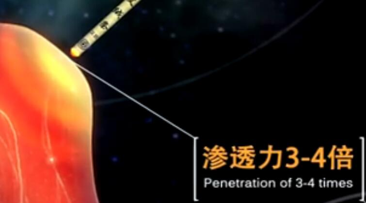

艾灸是中医学中防病治病、养生延寿的一种简便易行，切实有效的方法。是用易燃的艾绒等在体表经穴或患病部位进行烧灼、熏烤，借助药物温热的刺激，通过经络的传导，起到温通气血，扶正祛邪作用，从而达到保健养生、防病治病的目的。

清代吴亦鼎在《神灸经纶》中说：“夫灸取于火，以火性热而至速，体柔而用刚，能消阴翳，走而不守，善人脏腑。取艾之辛香作炷，能下二经，入三阴、理气血，以治百病，效如反掌。”这些记载和论述，说明了艾灸既可防病，又可治病。
艾灸防病、治病的作用大多源于艾灸的补益作用，其基本原理如下：
人体阴阳平衡，则身体健康，而阴阳失衡人就会发生各种疾病。艾灸可以调节阴阳补益的作用，从而使失衡之阴阳重新恢复平衡。
气是人的生命之源，血为人的基本物资，气血充足，气机条达，人的生命活动才能正常。艾灸可以补气、养血，还可以疏理气机，并且能升提中气，使得气血调和以达到养生保健的目的。
经络是气血运行之通路，经络通畅，则利于气血运行，营养物质之输布。寒湿等病邪，侵犯人体后，往往会闭阻经络，导致疾病的发生。
艾灸借助其温热肌肤的作用，温暖肌肤经脉，活血通络，以治疗寒凝血滞、经络痹阻所引起的各种病证。
正气存内，邪不可干。人的抵抗力强，疾病则不易产生，艾灸通过对某些穴位施灸，如大椎、足三里、气海、关元等，可以培扶人的正气，增强人防病治病的能力，而艾灸不同的穴位和部位可以产生不同的补益作用。
无论是调节阴阳、调和气血，还是温通经络，扶正祛邪，艾灸对人体起到了一个直接的或间接的补益作用，尤其对于虚寒证，所起的补益作用尤为明显。正是这种温阳补益，调和气血的作用，帮助人们达到防病治病、保健养生的目的。
艾灸补益主要是通过两种方法来实现的。一是直接补益，如对肾俞、命门等穴直接施灸，起到直接补益肾阳的作用；一是间接补益，比如艾灸足三里，可以调整脾胃的功能，使得食欲增强，胃肠道的消化吸收功能也增强，使得气血生化之源充足，从而补益了心血、肝血等，起到了间接补益的作用。
艾灸的补益作用在消化系统方面主要是通过对胃肠活动的变化，消化腺分泌的变化等实现的。在对犬的足三里施灸时，发现犬的胃肠活动出现兴奋性和抑制性的改变。艾灸对人体内各种分泌腺均有一定的调整作用，如胃液分泌过多者，灸之可抑制胃液的分泌；而胃液少者，灸之可促使胃液分泌。艾灸对于胆汁、唾液也有良好的调节作用。
（1）灸天突、百会穴后，脑血流图的若干指标均有显著变化，提示艾灸可以起到扩张脑血管，改善脑血管弹性，增加脑血流量的作用。脑循环的改善可加速患者大脑功能和脑细胞代谢的恢复，可提高记忆，改善睡眠，使临床症状得到明显改善。
（2）灸足三里、三阴交、曲池可以改善微循环，降低血流凝聚。日本金万淳夫等观察艾灸对健康人血流凝固力影响时发现：艾灸后l～3小时可见血凝固时间有缩短倾向。艾灸足三里可使纤维蛋白原明显下降。
（3）艾灸不仅使施灸部位灼热温暖，局部血容扩张，促进血液循环，而且可以改变全身的情况。艾条温和灸和文柱隔姜灸左侧足三里穴时，发现因施灸而引起的局部温热或灼痛，皆能很灵敏地反映在右手示指、中指容积曲线的变化上。
艾灸大椎穴可增加白细胞数量，其中以中性粒细胞升高明显。艾灸大椎可以增强网状内皮细胞的吞噬功能。艾灸可使免疫功能低下的小鼠的T淋巴细胞（TC）和B淋巴细胞（BC）增加明显，而以TC更为显著。说明了艾灸有增强免疫功能的作用。
艾灸补益，绝大多数情况下是通过在穴位上施灸实现的，而下面的按摩补益有的也需要在穴位上进行，因此必须学会定位、取穴，掌握取穴的基本方法。
取穴位的方法。一般可分为骨度分寸法、体表标志法、指寸法和经验取穴法等。这里主要介绍体表标志法、指寸法和经验取穴法。
以体表某些标志如五官、毛发、指甲、乳头、肚脐或关节、肌肉等活动时产生的孔隙，凹陷等来作为依据，去找所要取的穴位，这样的取穴方法就是体表标志法。通常比较多用此法取的穴位，如印堂，即两眉中间；膻中，即两乳头水平连线中点等。
指寸法是在骨度分寸和体表标志法的基础上，以施术者本人或被施术人的手指作测量标准来找穴位的一种方法，比较多用的有拇指同身寸法，即以拇指指关节的横度 作为1寸，还有横指同身寸法，即以示指、中指、环指、小指四指相并，以中指第M节为准，量取四横指为3寸。
经验法是人们在长期实践中积累的取穴法，此法简便易行，如直立垂手，中指指端即为风市穴，两手虎口自然平直交叉，在食指指端即为列缺穴等。
原文出处：http://www.sztiantianai.com/article/223.html 更多艾灸资讯尽在天天艾艾灸网！
上一篇：分清不同体质的艾灸注意事项 下一篇：艾灸完的艾灰就没用了？错了